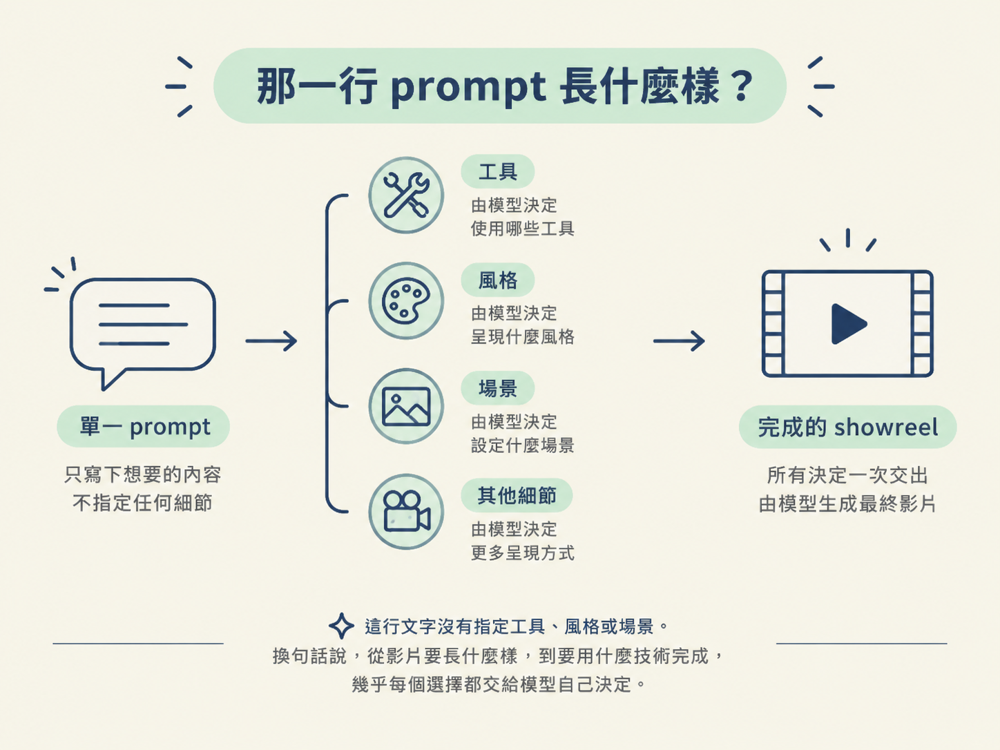
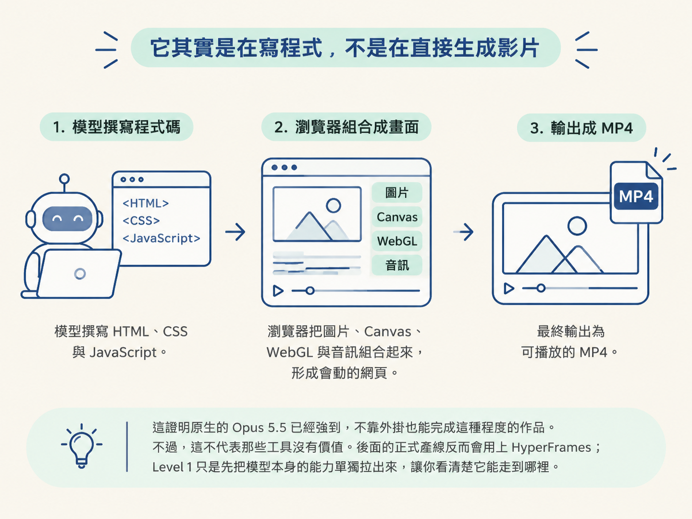

如果你只想先知道「模型到底能做到什麼程度」，最直接的方法，就是丟給它一句話，讓它從頭做到尾。這就是 one-shot：不先指定工具、風格或場景，讓模型自己決定怎麼完成任務。
上一節畫出了三層地圖：Level 1 是「做完才看到成果」的層次。這一層省力、速度快，很適合測試模型、做出作品集，或從成品裡撿出可以重複使用的元素。但它也有清楚的天花板：你必須等整支影片完成，才知道方向是不是對的。
這一節會實際跑一次 Level 1。你會看到它為什麼值得用，也會看見它為什麼不是生產級流程的終點。最後，我們會把這支 reel 拆成可保存、可複用的零件，讓它成為通往下一層的橋。
完成這一節後，你能用一行 one-shot prompt 取得一支 showreel，並說明它為什麼值得跑：它可以測試模型、累積作品集，也能產出可複用的元素。同時，你也會知道它為什麼還到不了生產級。
整支示範影片的起點，就是下面這一行。Jay 只做了兩件事：把 Opus 5.5 指向自己的工作區，然後送出這句 prompt。
這行文字沒有指定工具、風格或場景。換句話說，從影片要長什麼樣，到要用什麼技術完成，幾乎每個選擇都交給模型自己決定。

make a dynamic 15-second motion graphics video that shows what an incredible
motion designer you are, like it's your showreel for a résumé. go all out.這是整門課很重要的一個觀念。你看到的動作、文字和轉場，其實不是某個「生成式影片模型」直接畫的。這些都是模型寫出程式碼，再由程式把畫面組合出來。
圖片只是工作區裡的圖檔；Claude 用 JavaScript 把它們放到確切的位置和時間點。你請到的不是一位直接拿畫筆作畫的動畫師，而是一位會寫前端、也會計算時間的工程師。影片看起來像動畫，底層其實是一個會動的網頁。
下面這張表，整理了那一行 prompt 送進去之後，Opus 5.5 自己做出的選擇，以及最後得到的結果：
| 你送出的 | 誰在做 | 它自己選的 | 最後出來 |
|---|---|---|---|
| 一行 prompt，沒有指定任何工具 | Opus 5.5，effort 開到 max | HTML、CSS 與 JavaScript：影片本身就是一個網頁；Canvas 與 WebGL（three.js）畫形狀、粒子與 3D；Web Audio 用程式碼寫音樂與音效；自己用錄影程式或 ffmpeg 腳本輸出 MP4 | 一個可播放的網頁，加上一支有聲音的 1080p MP4 |
這次測試還刻意沒有用 HyperFrames 或 Remotion。這兩套都是 Claude 做影片時很熱門的開源函式庫，也沒有使用 After Effects 或 Premiere。
這證明原生的 Opus 5.5 已經強到，不靠外掛也能完成這種程度的作品。不過，這不代表那些工具沒有價值。後面的正式產線反而會用上 HyperFrames；Level 1 只是先把模型本身的能力單獨拉出來，讓你看清楚它能走到哪裡。

示範裡的每一支 reel，其實都是「同一行 one-shot prompt，再加上一小段客製內容」。你不需要從零開始重寫，只要補上想要的素材或用途，就能把通用 showreel 往不同方向推。
generate_image 工具生圖，背後使用的是 GPT Image 2.5，總預算為 10 美元；也可以直接使用資料夾裡現成的照片與圖示。這一版實際只花了 0.34 美元，就生成了七張 3D 渲染圖。pdoom-video 裡的重力、黑洞、筆電與特效。這個專案採用 MIT 授權，使用前記得確認授權條款。品牌版的模板如下。把橘色欄位換成自己的資料，就能讓影片從通用作品變成真正屬於你的內容：
make a dynamic 15-second motion graphics video that shows what an incredible motion designer you are,
like it's your showreel for a résumé. go all out.
Use my [name] design system, and make the video promote [product or website].
[Product] facts - build the video around these, do not invent a different product:
Product: [name] - [what it is, in one line].
Made by: [you or your company].
Website: [your site].
Offer: [your offer]. Main call to action: "[your CTA words]".
Features: [3 to 10, one line each].
By the numbers: [2 or 3 real numbers].
How it works: [the steps a customer takes, in order].
My design system is at [file, folder or link] - read it first and follow it.這段模板有一個關鍵作用：它要求模型根據真實事實搭建影片，而不是自行發明另一個產品。只要把品牌、產品、功能、數字和行動呼籲交代清楚，通用的 showreel 就能轉成你的版本。
一句話完成的影片，當然不會是你最後要交付的成品。不過，Level 1 的價值是快：它很快就能給你一個可觀看、可比較、可拆解的結果。
第三點尤其重要，因為它正好連到下一層。你可以先請 Claude 做一個頁面來播放這支 reel，讓你在暫停時把滑鼠移到畫面上，框出某個元素並辨認它是什麼，再把想保留的元素存進清單。
Make me a page that plays [your-reel].html and
lets me pick out its parts. When I pause and
hover, outline the element under my mouse and
tell me what it is. Let me save any element to a
list, with a short note on why I want to keep
it. Add a button that copies the whole list, so
I can paste it back to you.挑選完成後，把清單貼回去，請它加入元素庫：
add to element library: [paste the list from the picker]
如果你還沒有元素庫，就請 Claude 在一個 elements 資料夾裡建立一個，並附上每個元素的重複使用說明。這個「挑選、存檔、下次拿出來用」的循環，會把一次性的 reel 變成之後可以持續取用的資產。
Level 1 的價值在於快：它是量尺（測新模型），也是門面（作品集）和零件庫（可複用元素）。它的天花板是「好」，還不到「完成」；要往生產級走，得先學會分鏡。
所以，one-shot 會很快替你拿到第一版，也會留下許多可以重複使用的元素。但它最大的限制，是你必須等整支影片完成，才知道方向是否正確。
這也正是它和下一層的關係：Level 1 負責快速探索與累積素材；Level 2 則要在動畫真正開始之前，先讓你看見模型打算怎麼安排畫面。下一節，我們就來談分鏡。